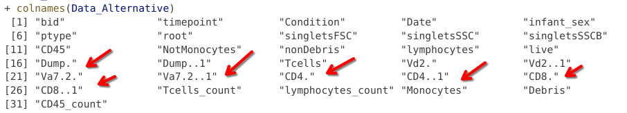
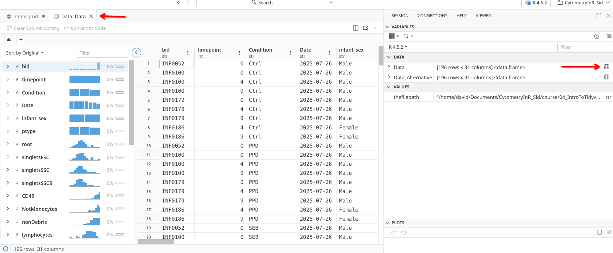
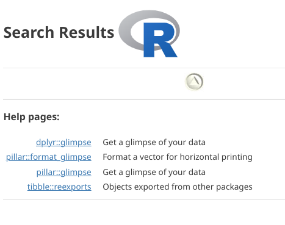
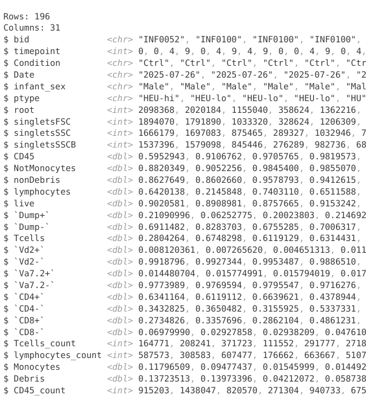

thefilepath <- file.path("data", "Dataset.csv")
thefilepath[1] "data/Dataset.csv"


For the YouTube livestream recording, see here
For screen-shot slides, click here
Within our daily workflows as cytometrist, after acquiring data on our respective instruments, we begin analyzing the resulting datasets. After implementing various workflows, we then export data for downstream statistical analysis.
When I first started my Ph.D program, a substantial amount of my day was spent renaming column names of the exported data so that they would fit nicely in a Microsoft Excel sheet column; setting up formulas to combine proportion of positive cells across positive quadrants, etc. Once this was done, additional hours would go by as I copied and pasted contents of those columns over to a GraphPad Prism worksheet for statistical analysis.
This of course was in an ideal scenario. Often times, the data was less organized, and instead of time spent copying and pasting over columns, it would first be spent rearranging values from individual cells in the worksheet that were separated by spaces, all the while trying to remember what various color codes and bold font stood for.
Today, we will explore what makes data “tidy”, and how to use the toolsets implemented in the various tidyverse R packages. At it’s simplest, if we think of and organize all our data in terms of rows and columns, we need fewer tools (ie. functions) to reshape and extract useful information that we are interested in. Additionally, this approach aligns more closely with how computers work, allowing us to carry out tasks that would otherwise have taken hours in mere seconds.
The dataset we will be using today is a manually-gated spectral flow cytometry dataset (similar to ones we would see exported by commercial software), and has been intentionally left slightly messy. You could however just as easily use a “matrix” or “data.frame” object exported from inside an fcs file, or swap in your own dataset. You would just need to make sure to switch out the input data by providing an alternate file path, etc.
As we do every week, on GitHub, sync your forked version of the CytometryInR course to bring in the most recent updates. Then within Positron, pull in those changes to your local computer.
For YouTube walkthrough of this process, click here
After creating a “Week04” project folder, copy over the contents of “course/04_IntroToTidyverse” to that folder. This will hopefully prevent any merge issues when you attempt to bring in new data to your local Cytometry in R folder next week. Please remember once you have set up your project folder to stage, commit and pus your changes to “Week04” to GitHub so that they are backed up remotely.
If you are having issues syncing due to the Take-Home Problem merge conflict, see this walkthrough
We will start by first loading in our copied over dataset (Dataset.csv) from it’s location in the project folder. If you are following the organization scheme we have been using throughout the course, your file path will look something like this:
thefilepath <- file.path("data", "Dataset.csv")
thefilepath[1] "data/Dataset.csv"We encourage using the file.path function to build our file paths, as this keeps our code reproducible and replicable when a project folder is copied to other people’s computers that differ on whether the operating system uses forward or backward slash separation between folders.
Above, we directly specified the name (Dataset) and filetype (.csv) of the file we wanted in the last argument of the file.path (“Dataset.csv”). This allows us to skip the list.files() step we used last week as we have provided the full file path. While this approach can be faster, if we accidentally mistype the file name, we could end up with an error at the next step due to no files being found with the mistyped name.
Since our dataset is stored as a .csv file, we will be using the read.csv() function from the utils package (included in our base R software installation) to read it into R. We will also use the colnames() function from last week to get a read-out of the column names.
Data <- read.csv(file=thefilepath, check.names=FALSE)
colnames(Data) [1] "bid" "timepoint" "Condition"
[4] "Date" "infant_sex" "ptype"
[7] "root" "singletsFSC" "singletsSSC"
[10] "singletsSSCB" "CD45" "NotMonocytes"
[13] "nonDebris" "lymphocytes" "live"
[16] "Dump+" "Dump-" "Tcells"
[19] "Vd2+" "Vd2-" "Va7.2+"
[22] "Va7.2-" "CD4+" "CD4-"
[25] "CD8+" "CD8-" "Tcells_count"
[28] "lymphocytes_count" "Monocytes" "Debris"
[31] "CD45_count" As we look at the line of code, we now have enough context to decipher that the “file” argument is where we provide a file path to an individual file, but what does the “check.names” argument do?
Let’s see what happens to the column names when we set “check.names” argument to TRUE:
Data_Alternative <- read.csv(thefilepath, check.names=TRUE)
colnames(Data_Alternative) [1] "bid" "timepoint" "Condition"
[4] "Date" "infant_sex" "ptype"
[7] "root" "singletsFSC" "singletsSSC"
[10] "singletsSSCB" "CD45" "NotMonocytes"
[13] "nonDebris" "lymphocytes" "live"
[16] "Dump." "Dump..1" "Tcells"
[19] "Vd2." "Vd2..1" "Va7.2."
[22] "Va7.2..1" "CD4." "CD4..1"
[25] "CD8." "CD8..1" "Tcells_count"
[28] "lymphocytes_count" "Monocytes" "Debris"
[31] "CD45_count" As we can see, any column name that contained a special character or a space was automatically converted over to R-approved syntax. However, this resulted in the loss of both +” and “-”, leaving us unable to determine whether we are looking at cells within or outside a particular gate.

Because of this, it is often better to rename columns individually after import, which we will learn how to do later today.
Following up with what we practiced last week, lets use the head() function to visualize the first few rows of data.
head(Data, 3) bid timepoint Condition Date infant_sex ptype root singletsFSC
1 INF0052 0 Ctrl 2025-07-26 Male HEU-hi 2098368 1894070
2 INF0100 0 Ctrl 2025-07-26 Male HEU-lo 2020184 1791890
3 INF0100 4 Ctrl 2025-07-26 Male HEU-lo 1155040 1033320
singletsSSC singletsSSCB CD45 NotMonocytes nonDebris lymphocytes
1 1666179 1537396 0.5952943 0.8820349 0.8627649 0.6420138
2 1697083 1579098 0.9106762 0.9052256 0.8602660 0.2145848
3 875465 845446 0.9705765 0.9845400 0.9578793 0.7403110
live Dump+ Dump- Tcells Vd2+ Vd2- Va7.2+
1 0.9020581 0.21090996 0.6911482 0.2804264 0.008120361 0.9918796 0.01448070
2 0.8908981 0.06252775 0.8283703 0.6748298 0.007265620 0.9927344 0.01577499
3 0.8757665 0.20023803 0.6755285 0.6119129 0.004651313 0.9953487 0.01579402
Va7.2- CD4+ CD4- CD8+ CD8- Tcells_count
1 0.9773989 0.6341164 0.3432825 0.2734826 0.06979990 164771
2 0.9769594 0.6119112 0.3650482 0.3357696 0.02927858 208241
3 0.9795547 0.6639621 0.3155925 0.2862104 0.02938209 371723
lymphocytes_count Monocytes Debris CD45_count
1 587573 0.11796509 0.13723513 915203
2 308583 0.09477437 0.13973396 1438047
3 607477 0.01545999 0.04212072 820570When working in Positron, we could have alternatively clicked on the little grid icon next to our created variable “Data” in the right secondary sidebar, which would have opened the data in our Editor window. From this same window, we can see it is stored as a “data.frame” object type.

We could also achieve the same window to open using the View() function:
View(Data)Wrapping up our brief recap of last week functions, we can check an objects type using both the class() and str() functions.
class(Data)[1] "data.frame"str(Data)'data.frame': 196 obs. of 31 variables:
$ bid : chr "INF0052" "INF0100" "INF0100" "INF0100" ...
$ timepoint : int 0 0 4 9 0 4 9 4 9 0 ...
$ Condition : chr "Ctrl" "Ctrl" "Ctrl" "Ctrl" ...
$ Date : chr "2025-07-26" "2025-07-26" "2025-07-26" "2025-07-26" ...
$ infant_sex : chr "Male" "Male" "Male" "Male" ...
$ ptype : chr "HEU-hi" "HEU-lo" "HEU-lo" "HEU-lo" ...
$ root : int 2098368 2020184 1155040 358624 1362216 1044808 1434840 972056 1521928 2363512 ...
$ singletsFSC : int 1894070 1791890 1033320 328624 1206309 917398 1265022 875707 1359574 2136616 ...
$ singletsSSC : int 1666179 1697083 875465 289327 1032946 735579 988445 767323 1175755 1875394 ...
$ singletsSSCB : int 1537396 1579098 845446 276289 982736 685592 940454 718000 1097478 1732620 ...
$ CD45 : num 0.595 0.911 0.971 0.982 0.957 ...
$ NotMonocytes : num 0.882 0.905 0.985 0.986 0.956 ...
$ nonDebris : num 0.863 0.86 0.958 0.941 0.841 ...
$ lymphocytes : num 0.642 0.215 0.74 0.651 0.705 ...
$ live : num 0.902 0.891 0.876 0.915 0.895 ...
$ Dump+ : num 0.2109 0.0625 0.2002 0.2147 0.3383 ...
$ Dump- : num 0.691 0.828 0.676 0.701 0.557 ...
$ Tcells : num 0.28 0.675 0.612 0.631 0.44 ...
$ Vd2+ : num 0.00812 0.00727 0.00465 0.01135 0.00475 ...
$ Vd2- : num 0.992 0.993 0.995 0.989 0.995 ...
$ Va7.2+ : num 0.0145 0.0158 0.0158 0.017 0.0133 ...
$ Va7.2- : num 0.977 0.977 0.98 0.972 0.982 ...
$ CD4+ : num 0.634 0.612 0.664 0.438 0.739 ...
$ CD4- : num 0.343 0.365 0.316 0.534 0.243 ...
$ CD8+ : num 0.273 0.336 0.286 0.486 0.195 ...
$ CD8- : num 0.0698 0.0293 0.0294 0.0476 0.0476 ...
$ Tcells_count : int 164771 208241 371723 111552 291777 271870 487937 220634 415867 184930 ...
$ lymphocytes_count: int 587573 308583 607477 176662 663667 510730 726238 451047 710964 652155 ...
$ Monocytes : num 0.118 0.0948 0.0155 0.0145 0.0444 ...
$ Debris : num 0.1372 0.1397 0.0421 0.0587 0.1592 ...
$ CD45_count : int 915203 1438047 820570 271304 940733 675857 921660 701657 1066884 1017713 ...Or alternatively using the new-to-us glimpse() function
glimpse(Data)Error in `glimpse()`:
! could not find function "glimpse"This however returns an error. Any idea why this might be occuring?
# We haven't attached/loaded the package in which the function glimpse is withinHow would we locate a package a not-yet-loaded function is within?
# We can use double ? to search all installed packages for a function, regardless
# if the package is attached to the environment or not
??glimpse
From the list of search matches (in the right secondary sidebar), it looks likely that the glimpse() function in the dplyr package was the one we were looking for. This is one the main tidyverse packages we will be using throughout the course. Let’s attach it to our environment via the library() call first and try running glimpse() again.
library(dplyr)
glimpse(Data)Rows: 196
Columns: 31
$ bid <chr> "INF0052", "INF0100", "INF0100", "INF0100", "INF0179…
$ timepoint <int> 0, 0, 4, 9, 0, 4, 9, 4, 9, 0, 0, 4, 9, 0, 4, 9, 4, 9…
$ Condition <chr> "Ctrl", "Ctrl", "Ctrl", "Ctrl", "Ctrl", "Ctrl", "Ctr…
$ Date <chr> "2025-07-26", "2025-07-26", "2025-07-26", "2025-07-2…
$ infant_sex <chr> "Male", "Male", "Male", "Male", "Male", "Male", "Mal…
$ ptype <chr> "HEU-hi", "HEU-lo", "HEU-lo", "HEU-lo", "HU", "HU", …
$ root <int> 2098368, 2020184, 1155040, 358624, 1362216, 1044808,…
$ singletsFSC <int> 1894070, 1791890, 1033320, 328624, 1206309, 917398, …
$ singletsSSC <int> 1666179, 1697083, 875465, 289327, 1032946, 735579, 9…
$ singletsSSCB <int> 1537396, 1579098, 845446, 276289, 982736, 685592, 94…
$ CD45 <dbl> 0.5952943, 0.9106762, 0.9705765, 0.9819573, 0.957259…
$ NotMonocytes <dbl> 0.8820349, 0.9052256, 0.9845400, 0.9855070, 0.955627…
$ nonDebris <dbl> 0.8627649, 0.8602660, 0.9578793, 0.9412615, 0.840783…
$ lymphocytes <dbl> 0.6420138, 0.2145848, 0.7403110, 0.6511588, 0.705478…
$ live <dbl> 0.9020581, 0.8908981, 0.8757665, 0.9153242, 0.895214…
$ `Dump+` <dbl> 0.21090996, 0.06252775, 0.20023803, 0.21469246, 0.33…
$ `Dump-` <dbl> 0.6911482, 0.8283703, 0.6755285, 0.7006317, 0.556895…
$ Tcells <dbl> 0.2804264, 0.6748298, 0.6119129, 0.6314431, 0.439643…
$ `Vd2+` <dbl> 0.008120361, 0.007265620, 0.004651313, 0.011348967, …
$ `Vd2-` <dbl> 0.9918796, 0.9927344, 0.9953487, 0.9886510, 0.995246…
$ `Va7.2+` <dbl> 0.014480704, 0.015774991, 0.015794019, 0.017023451, …
$ `Va7.2-` <dbl> 0.9773989, 0.9769594, 0.9795547, 0.9716276, 0.981924…
$ `CD4+` <dbl> 0.6341164, 0.6119112, 0.6639621, 0.4378944, 0.739256…
$ `CD4-` <dbl> 0.3432825, 0.3650482, 0.3155925, 0.5337331, 0.242668…
$ `CD8+` <dbl> 0.2734826, 0.3357696, 0.2862104, 0.4861231, 0.195063…
$ `CD8-` <dbl> 0.06979990, 0.02927858, 0.02938209, 0.04761008, 0.04…
$ Tcells_count <int> 164771, 208241, 371723, 111552, 291777, 271870, 4879…
$ lymphocytes_count <int> 587573, 308583, 607477, 176662, 663667, 510730, 7262…
$ Monocytes <dbl> 0.11796509, 0.09477437, 0.01545999, 0.01449297, 0.04…
$ Debris <dbl> 0.13723513, 0.13973396, 0.04212072, 0.05873854, 0.15…
$ CD45_count <int> 915203, 1438047, 820570, 271304, 940733, 675857, 921…We notice that while similar to the str() output, glimpse() handles spacing a little differently, and includes the dimensions at the top. However, we can also retrieve the dimensions directly using the dim() function (which maintains the row followed by column position convention of base R (ex. [196,31]))
dim(Data)[1] 196 31As we saw last week, functions often need values that match a certain type (the paintbrush needing paint analogy). As we inspect the columns of Data, we can notice some of the columns contain values within that are character (ie. “char”) values. Others appear to contain numeric values (which are subtyped as either double (“ie. dbl”) or integer (ie. “int”)). At first glance, we do not appear to have any logical (ie. TRUE or FALSE) columns in this dataset.

If we were trying to verify type of values contained within a data.frame column, we could employ several similarly-named functions (is.character(), is.numeric() or is.logical()) to check
# colnames(Data) # To recheck the column names
is.character(Data$bid)[1] TRUEis.numeric(Data$bid)[1] FALSE# colnames(Data) # To recheck the column names
is.character(Data$Tcells_count)[1] FALSEFor numeric columns using the is.numeric() function, we can also be subtype specific using either is.integer() or is.double().
# colnames(Data) # To recheck the column names
is.numeric(Data$Tcells_count)[1] TRUEis.integer(Data$Tcells_count)[1] TRUEis.double(Data$Tcells_count)[1] FALSEAs we observed last week with keywords, column names that contain special characters like $ or spaces will need to be surrounded with tick marks in order for the function to be able to run.
# colnames(Data) # To recheck the column names
is.numeric(Data$CD8-)Error in parse(text = input): <text>:2:21: unexpected ')'
1: # colnames(Data) # To recheck the column names
2: is.numeric(Data$CD8-)
^# colnames(Data) # To recheck the column names
is.numeric(Data$`CD8-`)[1] TRUENow that we have read in our data, and have a general picture of the structure and contents, lets start learning the main dplyr functions we will be using throughout the course. To do this, lets go ahead and attach dplyr to our local environment via the library() call.
library(dplyr)We will start with the select() function. It is used to “select” a column from a data.frame type object. In the simplest usage, we provide the name of our data.frame variable/object as the first argument after the opening parenthesis. This is then followed by the name of the column we want to select as the second argument (let’s place around the “” around the column name for now)
DateColumn <- select(Data, "Date")
DateColumn[1:10,] [1] "2025-07-26" "2025-07-26" "2025-07-26" "2025-07-26" "2025-07-26"
[6] "2025-07-26" "2025-07-26" "2025-07-26" "2025-07-26" "2025-07-26"This results in the column being selected, resulting in the new object containing only that subsetted out column from the original Data object.
While the above line of code works to select a column, when you encounter select() out in the wild, it will more often be in a line of code that looks like this:
DateColumn <- Data |> select("Date")
DateColumn[1:10,] [1] "2025-07-26" "2025-07-26" "2025-07-26" "2025-07-26" "2025-07-26"
[6] "2025-07-26" "2025-07-26" "2025-07-26" "2025-07-26" "2025-07-26"… “What in the world is that thing |> ?” …
Glad you asked! An useful feature of the tidyverse packages is their use of pipes (either the original magrittr package’s “%>%” or base R version >4.1.0's “|>”“), usually appearing like this:
# magrittr %>% pipe
DateColumn <- Data %>% select("Date")
# base R |> pipe
DateColumn <- Data |> select("Date")… “How do we interpret/read that line of code?” …
Let’s break it down, starting off just to the right of the assignment arrow (<-) with our data.frame “Data”.
DataWe then proceed to read to the right, adding in our pipe operator. The pipe essentially serves as an intermediate passing the contents of data onward to the subsequent function.
Data |> In our case, this subsequent function is the select() function, which will select a particular column from the available data. When using the pipe, the first argument slot we saw for “select(Data,”Date”)” is occupied by the contents Data that are being passed by the pipe.
Data |> select()To complete the transfer, we provide the desired column name to select() to act on (“Date” in this case)
Data |> select("Date")In summary, contents of Data are passed to the pipe, and select runs on those contents to select the Date column
Data |> select("Date")One of the main advantages for using pipes, is they can be linked together, passing resulting objects of one operation on to the next pipe and subsequent function. We can see this in operation in the example below where we hand off the isolated “Date” column to the nrow() function to determine number of rows. We will use pipes throughout the course, so you will gradually gain familiarity as you encounter them.
Data |> select("Date") |> nrow()[1] 196For those with prior R experience, you will be more familiar with the older magrittr %>% pipe. The base R |> pipe operator was introduced starting with R version 4.1.0. While mostly interchangeable, they have a few nuances that come into play for more advance use cases. You are welcome to use whichever you prefer (my current preference is |> as it’s one less key to press).
While we used “” around the column name in our previous example, unlike what we encountered with install.packages() when we forget to include quotation marks, select() still retrieves the correct column despite Date not being an environment variable:
Data |> select(Date) |> head(3) Date
1 2025-07-26
2 2025-07-26
3 2025-07-26The reasons for this Odd R behaviour are nuanced and for another day. For now, think of it as dplyr R package is picking up the slack, and using context to infer it’s a column name and not an environmental variable/object.
Since we are able to select one column, can we select multiple (similar to a [Data[,2:5]] approach in base R)? We can, and they can be positioned anywhere within the data.frame:
Subset <- Data |> select(bid, timepoint, Condition, Tcells, `CD8+`, `CD4+`)
head(Subset, 3) bid timepoint Condition Tcells CD8+ CD4+
1 INF0052 0 Ctrl 0.2804264 0.2734826 0.6341164
2 INF0100 0 Ctrl 0.6748298 0.3357696 0.6119112
3 INF0100 4 Ctrl 0.6119129 0.2862104 0.6639621You will notice that the order in which we selected the columns will dictate their position in the subsetted data.frame object:
Subset <- Data |> select(bid, Tcells, `CD8+`, `CD4+`, timepoint, Condition, )
head(Subset, 3) bid Tcells CD8+ CD4+ timepoint Condition
1 INF0052 0.2804264 0.2734826 0.6341164 0 Ctrl
2 INF0100 0.6748298 0.3357696 0.6119112 0 Ctrl
3 INF0100 0.6119129 0.2862104 0.6639621 4 CtrlAlternatively, we occasionally want to move one column. While we could respecify the location using select(), specifying the names of all the other columns out in a line of code to just to rearrange one does not sound like a good use of time. For this reason, the second dplyr function we will be learning is the relocate() function.
Looking at our Data object, let’s say we wanted to move the Tcells column from its current location to the second column position (right after the bid column). The line of code to do so would look like:
Data |> relocate(Tcells, .after=bid) |> head(3) bid Tcells timepoint Condition Date infant_sex ptype root
1 INF0052 0.2804264 0 Ctrl 2025-07-26 Male HEU-hi 2098368
2 INF0100 0.6748298 0 Ctrl 2025-07-26 Male HEU-lo 2020184
3 INF0100 0.6119129 4 Ctrl 2025-07-26 Male HEU-lo 1155040
singletsFSC singletsSSC singletsSSCB CD45 NotMonocytes nonDebris
1 1894070 1666179 1537396 0.5952943 0.8820349 0.8627649
2 1791890 1697083 1579098 0.9106762 0.9052256 0.8602660
3 1033320 875465 845446 0.9705765 0.9845400 0.9578793
lymphocytes live Dump+ Dump- Vd2+ Vd2- Va7.2+
1 0.6420138 0.9020581 0.21090996 0.6911482 0.008120361 0.9918796 0.01448070
2 0.2145848 0.8908981 0.06252775 0.8283703 0.007265620 0.9927344 0.01577499
3 0.7403110 0.8757665 0.20023803 0.6755285 0.004651313 0.9953487 0.01579402
Va7.2- CD4+ CD4- CD8+ CD8- Tcells_count
1 0.9773989 0.6341164 0.3432825 0.2734826 0.06979990 164771
2 0.9769594 0.6119112 0.3650482 0.3357696 0.02927858 208241
3 0.9795547 0.6639621 0.3155925 0.2862104 0.02938209 371723
lymphocytes_count Monocytes Debris CD45_count
1 587573 0.11796509 0.13723513 915203
2 308583 0.09477437 0.13973396 1438047
3 607477 0.01545999 0.04212072 820570# |> head(3) is used only to make the website output visualization manageable :DSimilar to what we saw with select(), this approach can also be used for more than 1 column:
Data |> relocate(Tcells, Monocytes, .after=bid) |> head(3) bid Tcells Monocytes timepoint Condition Date infant_sex ptype
1 INF0052 0.2804264 0.11796509 0 Ctrl 2025-07-26 Male HEU-hi
2 INF0100 0.6748298 0.09477437 0 Ctrl 2025-07-26 Male HEU-lo
3 INF0100 0.6119129 0.01545999 4 Ctrl 2025-07-26 Male HEU-lo
root singletsFSC singletsSSC singletsSSCB CD45 NotMonocytes nonDebris
1 2098368 1894070 1666179 1537396 0.5952943 0.8820349 0.8627649
2 2020184 1791890 1697083 1579098 0.9106762 0.9052256 0.8602660
3 1155040 1033320 875465 845446 0.9705765 0.9845400 0.9578793
lymphocytes live Dump+ Dump- Vd2+ Vd2- Va7.2+
1 0.6420138 0.9020581 0.21090996 0.6911482 0.008120361 0.9918796 0.01448070
2 0.2145848 0.8908981 0.06252775 0.8283703 0.007265620 0.9927344 0.01577499
3 0.7403110 0.8757665 0.20023803 0.6755285 0.004651313 0.9953487 0.01579402
Va7.2- CD4+ CD4- CD8+ CD8- Tcells_count
1 0.9773989 0.6341164 0.3432825 0.2734826 0.06979990 164771
2 0.9769594 0.6119112 0.3650482 0.3357696 0.02927858 208241
3 0.9795547 0.6639621 0.3155925 0.2862104 0.02938209 371723
lymphocytes_count Debris CD45_count
1 587573 0.13723513 915203
2 308583 0.13973396 1438047
3 607477 0.04212072 820570# |> head(3) is used only to make the website output visualization manageable :DWe can also modify the argument so that columns are placed before a certain column
Data |> relocate(Tcells, .before=Date) |> head(3) bid timepoint Condition Tcells Date infant_sex ptype root
1 INF0052 0 Ctrl 0.2804264 2025-07-26 Male HEU-hi 2098368
2 INF0100 0 Ctrl 0.6748298 2025-07-26 Male HEU-lo 2020184
3 INF0100 4 Ctrl 0.6119129 2025-07-26 Male HEU-lo 1155040
singletsFSC singletsSSC singletsSSCB CD45 NotMonocytes nonDebris
1 1894070 1666179 1537396 0.5952943 0.8820349 0.8627649
2 1791890 1697083 1579098 0.9106762 0.9052256 0.8602660
3 1033320 875465 845446 0.9705765 0.9845400 0.9578793
lymphocytes live Dump+ Dump- Vd2+ Vd2- Va7.2+
1 0.6420138 0.9020581 0.21090996 0.6911482 0.008120361 0.9918796 0.01448070
2 0.2145848 0.8908981 0.06252775 0.8283703 0.007265620 0.9927344 0.01577499
3 0.7403110 0.8757665 0.20023803 0.6755285 0.004651313 0.9953487 0.01579402
Va7.2- CD4+ CD4- CD8+ CD8- Tcells_count
1 0.9773989 0.6341164 0.3432825 0.2734826 0.06979990 164771
2 0.9769594 0.6119112 0.3650482 0.3357696 0.02927858 208241
3 0.9795547 0.6639621 0.3155925 0.2862104 0.02938209 371723
lymphocytes_count Monocytes Debris CD45_count
1 587573 0.11796509 0.13723513 915203
2 308583 0.09477437 0.13973396 1438047
3 607477 0.01545999 0.04212072 820570# |> head(3) is used only to make the website output visualization manageable :DAnd as we might suspect, we could specify a column index location rather than using a column name.
Data |> relocate(Date, .before=1) |> head(3) Date bid timepoint Condition infant_sex ptype root singletsFSC
1 2025-07-26 INF0052 0 Ctrl Male HEU-hi 2098368 1894070
2 2025-07-26 INF0100 0 Ctrl Male HEU-lo 2020184 1791890
3 2025-07-26 INF0100 4 Ctrl Male HEU-lo 1155040 1033320
singletsSSC singletsSSCB CD45 NotMonocytes nonDebris lymphocytes
1 1666179 1537396 0.5952943 0.8820349 0.8627649 0.6420138
2 1697083 1579098 0.9106762 0.9052256 0.8602660 0.2145848
3 875465 845446 0.9705765 0.9845400 0.9578793 0.7403110
live Dump+ Dump- Tcells Vd2+ Vd2- Va7.2+
1 0.9020581 0.21090996 0.6911482 0.2804264 0.008120361 0.9918796 0.01448070
2 0.8908981 0.06252775 0.8283703 0.6748298 0.007265620 0.9927344 0.01577499
3 0.8757665 0.20023803 0.6755285 0.6119129 0.004651313 0.9953487 0.01579402
Va7.2- CD4+ CD4- CD8+ CD8- Tcells_count
1 0.9773989 0.6341164 0.3432825 0.2734826 0.06979990 164771
2 0.9769594 0.6119112 0.3650482 0.3357696 0.02927858 208241
3 0.9795547 0.6639621 0.3155925 0.2862104 0.02938209 371723
lymphocytes_count Monocytes Debris CD45_count
1 587573 0.11796509 0.13723513 915203
2 308583 0.09477437 0.13973396 1438047
3 607477 0.01545999 0.04212072 820570# |> head(3) is used only to make the website output visualization manageable :DAt this point, we are able to both move and select particular columns, allowing us to rearrange and subset a larger data.frame object however we want it to appear. However, as we encountered, some of the names contain special characters and spaces, requiring use of tick marks (``) to avoid issues. How can we change a column name?
In base R, we could change individual column names by assigning a new value with the assignment arrow to the corresponding column name index. For example, looking at our Subset object, wen could rename CD8+ as follows:
colnames(Subset)[1] "bid" "Tcells" "CD8+" "CD4+" "timepoint" "Condition"colnames(Subset)[3][1] "CD8+"colnames(Subset)[3] <- "CD8Positive"
colnames(Subset)[1] "bid" "Tcells" "CD8Positive" "CD4+" "timepoint"
[6] "Condition" With the tidyverse, we can use the rename() function which removes the need to look up the column index number. The way we write the argument is placing within the parenthesis the old name to the right of the equals sign, with the new name to the left
Renamed <- Subset |> rename(CD4_Positive = `CD4+`)
colnames(Renamed)[1] "bid" "Tcells" "CD8Positive" "CD4_Positive" "timepoint"
[6] "Condition" If we wanted to rename multiple column names at once, we would just need to include a comma between the individual rename arguments within the parenthesis.
Renamed_Multiple <- Subset |> rename(specimen = bid, timepoint_months = timepoint, stimulation = Condition, CD4Positive=`CD4+`)
colnames(Renamed_Multiple)[1] "specimen" "Tcells" "CD8Positive" "CD4Positive"
[5] "timepoint_months" "stimulation" Sometimes, we may want to retrieve individual values present in a column, to use within either a vector or a list. We can do this using the pull() function, which will retrieve the column contents and strip the column formatting
Data |> pull(Date) |> head(5)[1] "2025-07-26" "2025-07-26" "2025-07-26" "2025-07-26" "2025-07-26"This can be useful when we are doing data exploration, and trying to determine how many unique variants might be present. For example, if we wanted to see what days individual samples were acquired, we could pull() the data and pass it to the unique() function:
Data |> pull(Date) |> unique()[1] "2025-07-26" "2025-07-29" "2025-07-31" "2025-08-05" "2025-08-07"
[6] "2025-08-22" "2025-08-28" "2025-08-30"So far, we have been working with dplyr functions primarily used when working with and subsetting columns (including select(), pull(), rename() and relocate()). What if we wanted to work with rows of a data.frame? This is where the filter() function is used.
The Condition column in this Dataset appears to be indicating whether the samples were stimulated. Let’s see how many unique values are contained within that column
Data |> pull(Condition) |> unique() [1] "Ctrl" "PPD" "SEB" In the case of this dataset, looks like the .fcs files where treated with either left alone, treated with PPD (Purified Protein Derrivative) or SEB. What if we wanted to subset only those treated with PPD?
Within filter(), we would specify the column name as the first argument, and ask that only values equal to (==) “PPD” be returned. Notice in this case, “” are needed, as we are asking for a matching character value.
PPDOnly <- Data |> filter(Condition == "PPD")
head(PPDOnly, 5) bid timepoint Condition Date infant_sex ptype root singletsFSC
1 INF0052 0 PPD 2025-07-26 Male HEU-hi 2363512 2136616
2 INF0100 0 PPD 2025-07-26 Male HEU-lo 2049112 1821676
3 INF0100 4 PPD 2025-07-26 Male HEU-lo 1063496 946587
4 INF0100 9 PPD 2025-07-26 Male HEU-lo 788368 714198
5 INF0179 0 PPD 2025-07-26 Male HU 1380336 1242311
singletsSSC singletsSSCB CD45 NotMonocytes nonDebris lymphocytes
1 1875394 1732620 0.5873838 0.8619837 0.8429685 0.6408044
2 1717636 1597085 0.9063081 0.9251961 0.8771889 0.2174284
3 796056 767297 0.9709891 0.9848719 0.9556049 0.7313503
4 626387 600011 0.9822803 0.9842139 0.8123041 0.6223228
5 1047081 1000877 0.9470275 0.9575685 0.9134438 0.6996502
live Dump+ Dump- Tcells Vd2+ Vd2- Va7.2+
1 0.9009254 0.20743228 0.6934931 0.2835676 0.007408209 0.9925918 0.01507057
2 0.8929673 0.06181426 0.8311531 0.6735798 0.007137230 0.9928628 0.01671801
3 0.8782307 0.20727202 0.6709587 0.5989873 0.005254643 0.9947454 0.01609790
4 0.9566639 0.23164587 0.7250180 0.6489405 0.011935922 0.9880641 0.01855298
5 0.8856898 0.33186111 0.5538287 0.4441538 0.004382972 0.9956170 0.01297237
Va7.2- CD4+ CD4- CD8+ CD8- Tcells_count
1 0.9775212 0.6340345 0.3434867 0.2744119 0.06907479 184930
2 0.9761448 0.6145707 0.3615741 0.3312279 0.03034620 211987
3 0.9786475 0.6559480 0.3226994 0.2912084 0.03149109 326378
4 0.9695111 0.4306889 0.5388222 0.4908558 0.04796636 238021
5 0.9826447 0.7499194 0.2327253 0.1850897 0.04763554 294549
lymphocytes_count Monocytes Debris CD45_count
1 652155 0.13801632 0.15703150 1017713
2 314717 0.07480391 0.12281107 1447451
3 544883 0.01512811 0.04439511 745037
4 366784 0.01578611 0.18769586 589379
5 663169 0.04243146 0.08655621 947858While this works, using “==” to match can glitch, especially with character values. Using the %in% operator is a better way of identifying and extracting only the rows whose Condition column contains “PPD”
Data |> filter(Condition %in% "PPD") |> head(5) bid timepoint Condition Date infant_sex ptype root singletsFSC
1 INF0052 0 PPD 2025-07-26 Male HEU-hi 2363512 2136616
2 INF0100 0 PPD 2025-07-26 Male HEU-lo 2049112 1821676
3 INF0100 4 PPD 2025-07-26 Male HEU-lo 1063496 946587
4 INF0100 9 PPD 2025-07-26 Male HEU-lo 788368 714198
5 INF0179 0 PPD 2025-07-26 Male HU 1380336 1242311
singletsSSC singletsSSCB CD45 NotMonocytes nonDebris lymphocytes
1 1875394 1732620 0.5873838 0.8619837 0.8429685 0.6408044
2 1717636 1597085 0.9063081 0.9251961 0.8771889 0.2174284
3 796056 767297 0.9709891 0.9848719 0.9556049 0.7313503
4 626387 600011 0.9822803 0.9842139 0.8123041 0.6223228
5 1047081 1000877 0.9470275 0.9575685 0.9134438 0.6996502
live Dump+ Dump- Tcells Vd2+ Vd2- Va7.2+
1 0.9009254 0.20743228 0.6934931 0.2835676 0.007408209 0.9925918 0.01507057
2 0.8929673 0.06181426 0.8311531 0.6735798 0.007137230 0.9928628 0.01671801
3 0.8782307 0.20727202 0.6709587 0.5989873 0.005254643 0.9947454 0.01609790
4 0.9566639 0.23164587 0.7250180 0.6489405 0.011935922 0.9880641 0.01855298
5 0.8856898 0.33186111 0.5538287 0.4441538 0.004382972 0.9956170 0.01297237
Va7.2- CD4+ CD4- CD8+ CD8- Tcells_count
1 0.9775212 0.6340345 0.3434867 0.2744119 0.06907479 184930
2 0.9761448 0.6145707 0.3615741 0.3312279 0.03034620 211987
3 0.9786475 0.6559480 0.3226994 0.2912084 0.03149109 326378
4 0.9695111 0.4306889 0.5388222 0.4908558 0.04796636 238021
5 0.9826447 0.7499194 0.2327253 0.1850897 0.04763554 294549
lymphocytes_count Monocytes Debris CD45_count
1 652155 0.13801632 0.15703150 1017713
2 314717 0.07480391 0.12281107 1447451
3 544883 0.01512811 0.04439511 745037
4 366784 0.01578611 0.18769586 589379
5 663169 0.04243146 0.08655621 947858Similar to what we saw for select(), we can grab rows that contain various values at once. We would just need to modify the second part of the argument. If we wanted to grab rows whose Condition column contained either PPD or SEB, we would need to provide that argument as a vector, placing both within c()/
Data |> filter(Condition %in% c("PPD", "SEB")) |> head(5) bid timepoint Condition Date infant_sex ptype root singletsFSC
1 INF0052 0 PPD 2025-07-26 Male HEU-hi 2363512 2136616
2 INF0100 0 PPD 2025-07-26 Male HEU-lo 2049112 1821676
3 INF0100 4 PPD 2025-07-26 Male HEU-lo 1063496 946587
4 INF0100 9 PPD 2025-07-26 Male HEU-lo 788368 714198
5 INF0179 0 PPD 2025-07-26 Male HU 1380336 1242311
singletsSSC singletsSSCB CD45 NotMonocytes nonDebris lymphocytes
1 1875394 1732620 0.5873838 0.8619837 0.8429685 0.6408044
2 1717636 1597085 0.9063081 0.9251961 0.8771889 0.2174284
3 796056 767297 0.9709891 0.9848719 0.9556049 0.7313503
4 626387 600011 0.9822803 0.9842139 0.8123041 0.6223228
5 1047081 1000877 0.9470275 0.9575685 0.9134438 0.6996502
live Dump+ Dump- Tcells Vd2+ Vd2- Va7.2+
1 0.9009254 0.20743228 0.6934931 0.2835676 0.007408209 0.9925918 0.01507057
2 0.8929673 0.06181426 0.8311531 0.6735798 0.007137230 0.9928628 0.01671801
3 0.8782307 0.20727202 0.6709587 0.5989873 0.005254643 0.9947454 0.01609790
4 0.9566639 0.23164587 0.7250180 0.6489405 0.011935922 0.9880641 0.01855298
5 0.8856898 0.33186111 0.5538287 0.4441538 0.004382972 0.9956170 0.01297237
Va7.2- CD4+ CD4- CD8+ CD8- Tcells_count
1 0.9775212 0.6340345 0.3434867 0.2744119 0.06907479 184930
2 0.9761448 0.6145707 0.3615741 0.3312279 0.03034620 211987
3 0.9786475 0.6559480 0.3226994 0.2912084 0.03149109 326378
4 0.9695111 0.4306889 0.5388222 0.4908558 0.04796636 238021
5 0.9826447 0.7499194 0.2327253 0.1850897 0.04763554 294549
lymphocytes_count Monocytes Debris CD45_count
1 652155 0.13801632 0.15703150 1017713
2 314717 0.07480391 0.12281107 1447451
3 544883 0.01512811 0.04439511 745037
4 366784 0.01578611 0.18769586 589379
5 663169 0.04243146 0.08655621 947858Alternatively, we could have set up the vector externally, and then provided it to filter()
TheseConditions <- c("PPD", "SEB")
Data |> filter(Condition %in% TheseConditions) |> head(5) bid timepoint Condition Date infant_sex ptype root singletsFSC
1 INF0052 0 PPD 2025-07-26 Male HEU-hi 2363512 2136616
2 INF0100 0 PPD 2025-07-26 Male HEU-lo 2049112 1821676
3 INF0100 4 PPD 2025-07-26 Male HEU-lo 1063496 946587
4 INF0100 9 PPD 2025-07-26 Male HEU-lo 788368 714198
5 INF0179 0 PPD 2025-07-26 Male HU 1380336 1242311
singletsSSC singletsSSCB CD45 NotMonocytes nonDebris lymphocytes
1 1875394 1732620 0.5873838 0.8619837 0.8429685 0.6408044
2 1717636 1597085 0.9063081 0.9251961 0.8771889 0.2174284
3 796056 767297 0.9709891 0.9848719 0.9556049 0.7313503
4 626387 600011 0.9822803 0.9842139 0.8123041 0.6223228
5 1047081 1000877 0.9470275 0.9575685 0.9134438 0.6996502
live Dump+ Dump- Tcells Vd2+ Vd2- Va7.2+
1 0.9009254 0.20743228 0.6934931 0.2835676 0.007408209 0.9925918 0.01507057
2 0.8929673 0.06181426 0.8311531 0.6735798 0.007137230 0.9928628 0.01671801
3 0.8782307 0.20727202 0.6709587 0.5989873 0.005254643 0.9947454 0.01609790
4 0.9566639 0.23164587 0.7250180 0.6489405 0.011935922 0.9880641 0.01855298
5 0.8856898 0.33186111 0.5538287 0.4441538 0.004382972 0.9956170 0.01297237
Va7.2- CD4+ CD4- CD8+ CD8- Tcells_count
1 0.9775212 0.6340345 0.3434867 0.2744119 0.06907479 184930
2 0.9761448 0.6145707 0.3615741 0.3312279 0.03034620 211987
3 0.9786475 0.6559480 0.3226994 0.2912084 0.03149109 326378
4 0.9695111 0.4306889 0.5388222 0.4908558 0.04796636 238021
5 0.9826447 0.7499194 0.2327253 0.1850897 0.04763554 294549
lymphocytes_count Monocytes Debris CD45_count
1 652155 0.13801632 0.15703150 1017713
2 314717 0.07480391 0.12281107 1447451
3 544883 0.01512811 0.04439511 745037
4 366784 0.01578611 0.18769586 589379
5 663169 0.04243146 0.08655621 947858While this works when we have a limited number of variant condition values, what if had many more but only wanted to exclude one value? As we saw when learning about Conditionals, when we add a ! in front of a logical value, we get the opposite logical value returned
IsThisASpectralInstrument <- TRUE
!IsThisASpectralInstrument[1] FALSEIn the context of the dplyr package, we can use ! within the filter() to remove rows that contain a certain value
Subset <- Data |> filter(!Condition %in% "SEB")
Subset |> pull(Condition) |> unique()[1] "Ctrl" "PPD" Likewise, we can also use it with the select() to exclude columns we don’t want to include
Subset <- Data |> select(!timepoint)
Subset[1:3,] bid Condition Date infant_sex ptype root singletsFSC
1 INF0052 Ctrl 2025-07-26 Male HEU-hi 2098368 1894070
2 INF0100 Ctrl 2025-07-26 Male HEU-lo 2020184 1791890
3 INF0100 Ctrl 2025-07-26 Male HEU-lo 1155040 1033320
singletsSSC singletsSSCB CD45 NotMonocytes nonDebris lymphocytes
1 1666179 1537396 0.5952943 0.8820349 0.8627649 0.6420138
2 1697083 1579098 0.9106762 0.9052256 0.8602660 0.2145848
3 875465 845446 0.9705765 0.9845400 0.9578793 0.7403110
live Dump+ Dump- Tcells Vd2+ Vd2- Va7.2+
1 0.9020581 0.21090996 0.6911482 0.2804264 0.008120361 0.9918796 0.01448070
2 0.8908981 0.06252775 0.8283703 0.6748298 0.007265620 0.9927344 0.01577499
3 0.8757665 0.20023803 0.6755285 0.6119129 0.004651313 0.9953487 0.01579402
Va7.2- CD4+ CD4- CD8+ CD8- Tcells_count
1 0.9773989 0.6341164 0.3432825 0.2734826 0.06979990 164771
2 0.9769594 0.6119112 0.3650482 0.3357696 0.02927858 208241
3 0.9795547 0.6639621 0.3155925 0.2862104 0.02938209 371723
lymphocytes_count Monocytes Debris CD45_count
1 587573 0.11796509 0.13723513 915203
2 308583 0.09477437 0.13973396 1438047
3 607477 0.01545999 0.04212072 820570As we can see, with just these handful of functions, we have the building blocks to rearrange and subset a larger data.frame into a format that we prefer. But what if we wanted to alter the content of a column, or add new columns to an existing data.frame? This is where the mutate() function can be used.
Let’s start by slimming down our current Data to a smaller workable example, highlighting the functions and pipes we learned about today
TidyData <- Data |> filter(Condition %in% "Ctrl") |> filter(timepoint %in% "0") |>
select(bid, timepoint, Condition, Date, Tcells_count, CD45_count) |>
rename(specimen=bid, condition=Condition) |> relocate(Date, .after=specimen)TidyData specimen Date timepoint condition Tcells_count CD45_count
1 INF0052 2025-07-26 0 Ctrl 164771 915203
2 INF0100 2025-07-26 0 Ctrl 208241 1438047
3 INF0179 2025-07-26 0 Ctrl 291777 940733
4 INF0134 2025-07-29 0 Ctrl 127866 689676
5 INF0148 2025-07-29 0 Ctrl 234335 1013985
6 INF0191 2025-07-29 0 Ctrl 55780 715443
7 INF0124 2025-07-31 0 Ctrl 70297 687720
8 INF0149 2025-07-31 0 Ctrl 107900 857845
9 INF0169 2025-07-31 0 Ctrl 75540 854594
10 INF0019 2025-08-05 0 Ctrl 208055 873622
11 INF0032 2025-08-05 0 Ctrl 361034 753064
12 INF0180 2025-08-05 0 Ctrl 284958 1049663
13 INF0155 2025-08-07 0 Ctrl 281626 1065048
14 INF0158 2025-08-07 0 Ctrl 280913 1249338
15 INF0159 2025-08-07 0 Ctrl 452551 1190219
16 INF0013 2025-08-22 0 Ctrl 182751 836573
17 INF0023 2025-08-22 0 Ctrl 218435 968035
18 INF0030 2025-08-22 0 Ctrl 85521 732321
19 INF0166 2025-08-28 0 Ctrl 225650 739495
20 INF0199 2025-08-28 0 Ctrl 169736 1112176
21 INF0207 2025-08-28 0 Ctrl 39055 905365
22 INF0614 2025-08-30 0 Ctrl 224396 1569007
23 INF0622 2025-08-30 0 Ctrl 161924 939307The mutate() function can be used to modify existing columns, as well as to create new ones. For example, let’s derrive the proportion of T cells from the overall CD45 gate. To do so, within the parenthesis, we would specify a new column name, and then divide the original columns:
TidyData <- TidyData |> mutate(Tcells_ProportionCD45 = Tcells_count / CD45_count)
TidyData specimen Date timepoint condition Tcells_count CD45_count
1 INF0052 2025-07-26 0 Ctrl 164771 915203
2 INF0100 2025-07-26 0 Ctrl 208241 1438047
3 INF0179 2025-07-26 0 Ctrl 291777 940733
4 INF0134 2025-07-29 0 Ctrl 127866 689676
5 INF0148 2025-07-29 0 Ctrl 234335 1013985
6 INF0191 2025-07-29 0 Ctrl 55780 715443
7 INF0124 2025-07-31 0 Ctrl 70297 687720
8 INF0149 2025-07-31 0 Ctrl 107900 857845
9 INF0169 2025-07-31 0 Ctrl 75540 854594
10 INF0019 2025-08-05 0 Ctrl 208055 873622
11 INF0032 2025-08-05 0 Ctrl 361034 753064
12 INF0180 2025-08-05 0 Ctrl 284958 1049663
13 INF0155 2025-08-07 0 Ctrl 281626 1065048
14 INF0158 2025-08-07 0 Ctrl 280913 1249338
15 INF0159 2025-08-07 0 Ctrl 452551 1190219
16 INF0013 2025-08-22 0 Ctrl 182751 836573
17 INF0023 2025-08-22 0 Ctrl 218435 968035
18 INF0030 2025-08-22 0 Ctrl 85521 732321
19 INF0166 2025-08-28 0 Ctrl 225650 739495
20 INF0199 2025-08-28 0 Ctrl 169736 1112176
21 INF0207 2025-08-28 0 Ctrl 39055 905365
22 INF0614 2025-08-30 0 Ctrl 224396 1569007
23 INF0622 2025-08-30 0 Ctrl 161924 939307
Tcells_ProportionCD45
1 0.18003765
2 0.14480820
3 0.31015921
4 0.18540010
5 0.23110302
6 0.07796568
7 0.10221747
8 0.12578030
9 0.08839285
10 0.23815220
11 0.47942008
12 0.27147570
13 0.26442564
14 0.22484948
15 0.38022498
16 0.21845195
17 0.22564783
18 0.11678076
19 0.30514067
20 0.15261613
21 0.04313730
22 0.14301785
23 0.17238666We can see that we have many significant digits being returned. Let’s round this new column to 2 significant digits by applying the round() function
TidyData <- TidyData |> mutate(TcellsRounded = round(Tcells_ProportionCD45, 2))
TidyData specimen Date timepoint condition Tcells_count CD45_count
1 INF0052 2025-07-26 0 Ctrl 164771 915203
2 INF0100 2025-07-26 0 Ctrl 208241 1438047
3 INF0179 2025-07-26 0 Ctrl 291777 940733
4 INF0134 2025-07-29 0 Ctrl 127866 689676
5 INF0148 2025-07-29 0 Ctrl 234335 1013985
6 INF0191 2025-07-29 0 Ctrl 55780 715443
7 INF0124 2025-07-31 0 Ctrl 70297 687720
8 INF0149 2025-07-31 0 Ctrl 107900 857845
9 INF0169 2025-07-31 0 Ctrl 75540 854594
10 INF0019 2025-08-05 0 Ctrl 208055 873622
11 INF0032 2025-08-05 0 Ctrl 361034 753064
12 INF0180 2025-08-05 0 Ctrl 284958 1049663
13 INF0155 2025-08-07 0 Ctrl 281626 1065048
14 INF0158 2025-08-07 0 Ctrl 280913 1249338
15 INF0159 2025-08-07 0 Ctrl 452551 1190219
16 INF0013 2025-08-22 0 Ctrl 182751 836573
17 INF0023 2025-08-22 0 Ctrl 218435 968035
18 INF0030 2025-08-22 0 Ctrl 85521 732321
19 INF0166 2025-08-28 0 Ctrl 225650 739495
20 INF0199 2025-08-28 0 Ctrl 169736 1112176
21 INF0207 2025-08-28 0 Ctrl 39055 905365
22 INF0614 2025-08-30 0 Ctrl 224396 1569007
23 INF0622 2025-08-30 0 Ctrl 161924 939307
Tcells_ProportionCD45 TcellsRounded
1 0.18003765 0.18
2 0.14480820 0.14
3 0.31015921 0.31
4 0.18540010 0.19
5 0.23110302 0.23
6 0.07796568 0.08
7 0.10221747 0.10
8 0.12578030 0.13
9 0.08839285 0.09
10 0.23815220 0.24
11 0.47942008 0.48
12 0.27147570 0.27
13 0.26442564 0.26
14 0.22484948 0.22
15 0.38022498 0.38
16 0.21845195 0.22
17 0.22564783 0.23
18 0.11678076 0.12
19 0.30514067 0.31
20 0.15261613 0.15
21 0.04313730 0.04
22 0.14301785 0.14
23 0.17238666 0.17And while we are here, let’s rearrange the rows so that they are descending based on the Tcell proportion. We can use this by using the desc() and arrange() functions from dplyr:
TidyData <- TidyData |> arrange(desc(TcellsRounded))And let’s go ahead and filter() and identify the specimens that had more than 30% T cells as part of the overall CD45 gate (context, these samples were Cord Blood):
TidyData |> filter(TcellsRounded > 0.3) specimen Date timepoint condition Tcells_count CD45_count
1 INF0032 2025-08-05 0 Ctrl 361034 753064
2 INF0159 2025-08-07 0 Ctrl 452551 1190219
3 INF0179 2025-07-26 0 Ctrl 291777 940733
4 INF0166 2025-08-28 0 Ctrl 225650 739495
Tcells_ProportionCD45 TcellsRounded
1 0.4794201 0.48
2 0.3802250 0.38
3 0.3101592 0.31
4 0.3051407 0.31Which is we had wanted to just retrieve the specimen IDs, we could add pull() after a new pipe argument.
TidyData |> filter(TcellsRounded > 0.3) |> pull(specimen)[1] "INF0032" "INF0159" "INF0179" "INF0166"And finally, since I may want to send the data to a supervisor, let’s go ahead and export this “tidyed” version of our data.frame out to it’s own .csv file. Working within our project folder, this would look like this:
NewName <- paste0("MyNewDataset", ".csv")
StorageLocation <- file.path("data", NewName)
StorageLocation[1] "data/MyNewDataset.csv"write.csv(TidyData, StorageLocation, row.names=FALSE)In this session, we explored the main functions within the dplyr package used in context of “tidying” data, including selecting columns, filtering for rows, as well as additional functions used to create or modify existing values. We will continue to build on these throughout the course, introducing a few additional tidyverse functions we don’t have time to cover today as appropiate. As we saw, knowing how to use these functions can allow us to extensively and quickly modify our existing exported data files.
On important goal as we move through the course (in terms of both reproducibility and replicability) is to attempt to only modify files within R, not go back to the original csv or excel file and hand-modify individual values. This approach is not reproducible or replicable. Once set up, an R script can quickly re-carry out these same cleanup steps, and leave a documented process of how the data has changed (even more so if you are maintaining version control). If you do want to save the changes you have made, it is best to save it out as a new .csv file with which you work later.
Next week, we will be using these skills when setting up metadata for our .fcs files. We will additionally take a look at the main format source of controversy within Bioconductor Flow Cytometry packages, ie. whether to use a flowframe or a cytoframe. Exciting stuff, but important information to know as the functions needed to import them are slightly different. We will also look at how to import existing manually gated .wsp from FlowJo/Diva/Floreada in via the CytoML package.

Data Organization in Spreadsheets for Ecologists This Carpentry self-study course was one of my “Aha” moments early on when learning R, and reinforced the need to try to keep my own Excel/CSV files in a tidy manner. It is worth the time going through in its entirety (even for non-Ecologist).
Data Analysis and Visualization in R for Ecologists Continuation of the above, and a good way to continue building on the tidyverse functions we learned today.
Simplistics: Introduction to Tidyverse in R The YouTube channel is mainly focused on statistics for Psych classes, but at the end of the day, we are all working with similar objects with rows and columns, just the values contained within differ.
Riffomonas Project Playlist: Data Manipulation with R’s Tidyverse Riffomonas has a playlist that delves into both the tidyverse functions we used today, as well as other ones we will encounter later on in the course.
Taking a dataset (either todays or one of your own), work through the column-operating functions (select(), rename(), and relocate()). Once this is done, filter() by conditions from two separate columns, arrange in an order that makes sense, and export this “tidy” data as a .csv file.
We used the mutate() function to create new columns, but it can also be used to modify existing ones. Various numeric columns are showing way to many significant digits. As was shown, use round() to round all these proportion columns, but use mutate to overwrite the existing column. Export this as it’s own .csv file.
We can also use mutate() to combine columns. For our dataset, “bid”, “timepoint”, “Condition” are separate columns that originally were all part of the filename for the individual .fcs file. Try to figure out a way to combine them back together using paste0(), and save the new column as “filename”. Once this is done, pull() the contents of this column, and using try to determine whether there were any duplicates (think innovative ways of using !, length() and unique())